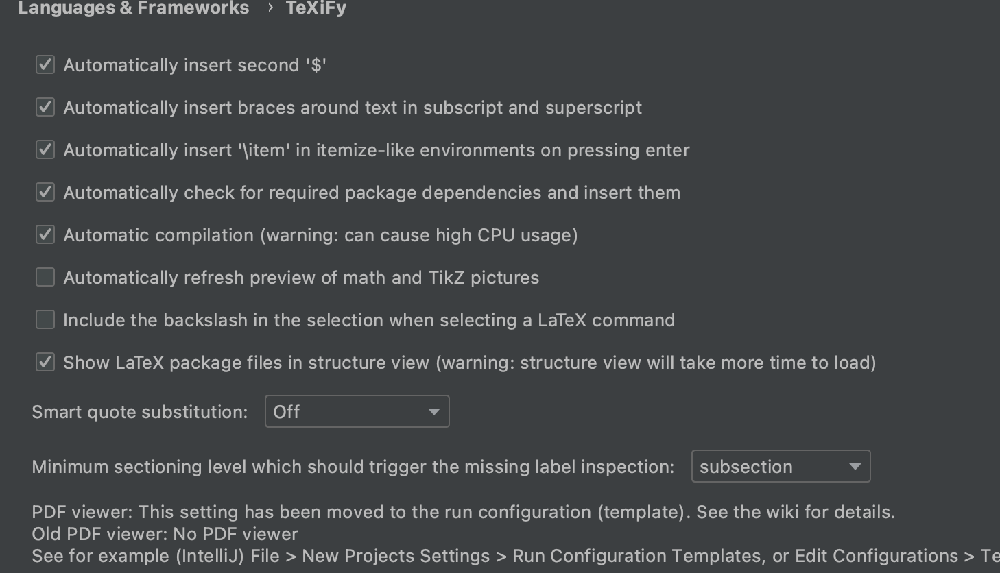
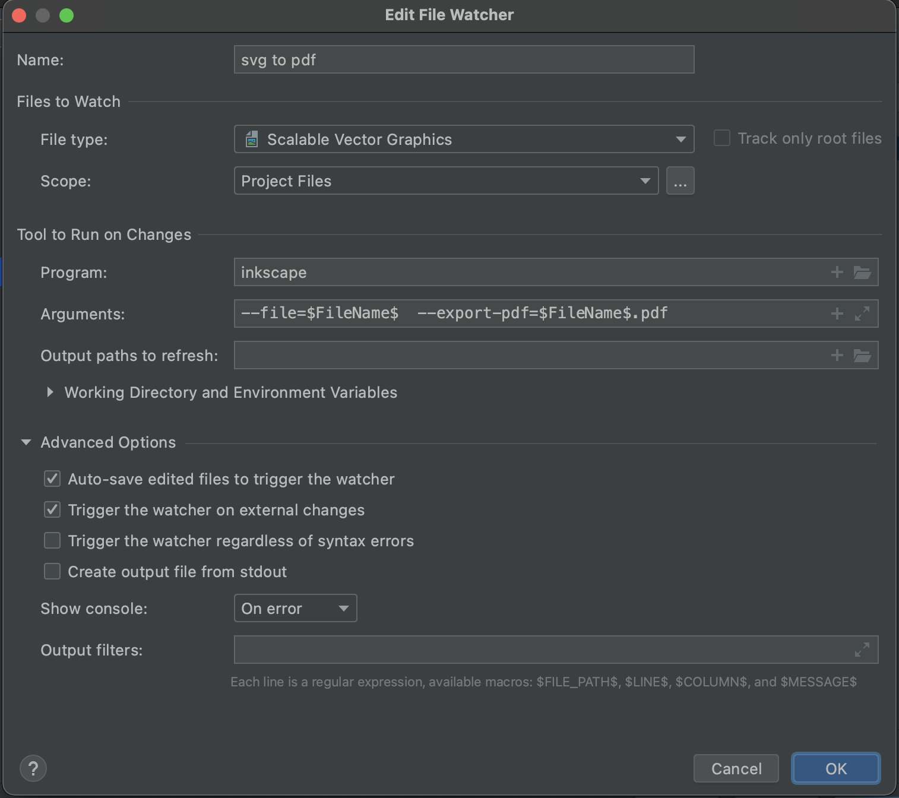
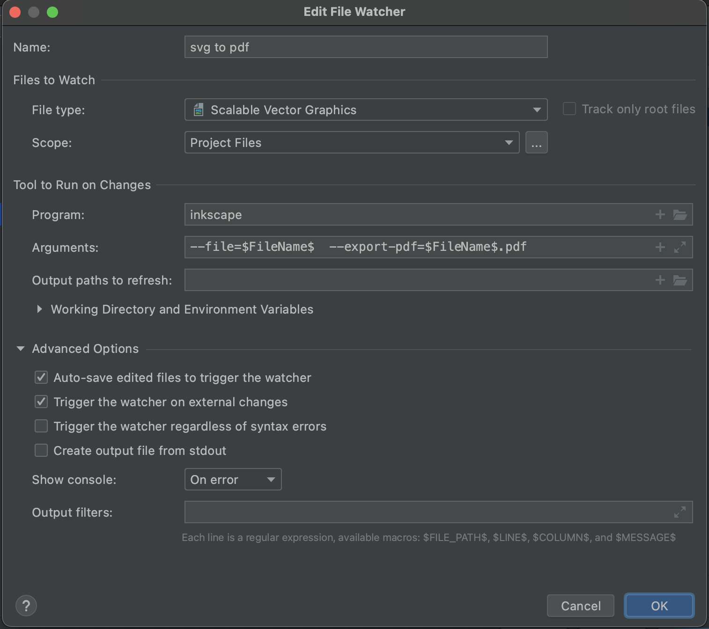

TL;DR: IntelliJ Idea is great for working with LaTeX. The basic functionality is provided by plugins, and a lot of additional automation can be set using File Watchers. I only miss displaying chapters and sections like in TexStudio.
LaTeX in IntelliJ IDEA
I don’t work with LaTeX very often, but this format has many advantages, especially when working on longer written forms, containing a lot of graphics, diagrams, mathematical formulas, etc. I used to use TexStudio, but decided to check if and how IntelliJ IDEA will do I use every day.
And it’s doing great. I won’t be coming back to TexStudio :) Because I would use IntelliJ to write, for example, code fragments, which I would then paste into a dedicated LaTeX editor. And I like to have everything in a single IDE.
My requirements
I decided that I want a framework for writing longer texts, ultimately for publication as an e-book or print. Preferably having everything in the code (diagrams, charts), using version control, which is how I usually work. That is why I immediately rejected Google Docs or MS Office. LaTeX seems like a pretty good solution:
- everything is in the code, text, formatting styles, code fragments in dedicated files, diagrams
- organization of the project in many folders and files, e.g. separate files for chapters and one main file collecting the entire document
- great support for bibliography, footnotes, and table of contents
- easy PDF generation
- … and probably a lot of other advantages that I haven’t got to know yet.
However, there are some problems:
- document preview - not available immediately, only after compilation. This can even be an advantage because I don’t focus on appearance, but content. And the appearance itself should be subject to predetermined rules for the entire document. You can set up automatic compilation and preview inside the IDE.
- code syntax coloring - so far, no official support for
Kotlin, but I found a template on GitHub - diagram support - I think there are some packages for LaTeX, but I don’t want to learn them. I like
PlantUMLand would prefer to use it directly.
Plugins
The IDE doesn’t have LaTeX support by default, but there are some useful plugins that I used:
Texify
The most important plugin is Texify which provides tons of LaTeX-related functionality. From highlighting and syntax prompting to compiling files into PDF.
Additionally, you can set the plugin in such a way that it generates a preview of the file automatically after each change.

The document can be compiled manually by clicking on the icon next to the \begin block, or by creating a custom action if you need a more complex process.
PDF Viewer
Basically a maintenance-free plugin that allows you to display PDFs directly in the IDE. Texify works well with it, automatically displaying the resulting PDF file after compilation. Plugin page
PlantUML Integration
I am using PlantUML on the blog to create diagrams, mainly class diagrams. The tool itself is quite powerful but friendly at the same time. This plugin provides IDE support for generating preview and exporting diagrams to .svg or .png files. Plugin page
File Watchers
I think this is a pre-installed one. The plugin for creating some sort of automation inside the IDE. It allows you to set the type and location of watched files, and what should happen if they are changed/updated/created.
Usually this will be a command line command with specific parameters, for example:
In addition, of course, LaTeX must be installed in the system, e.g. MiKTeX, which the IDE will use to compile files to PDF.
My workflow
Ultimately, I would like my workflow to look like this:
- I write text in a LaTeX document, mapping the document’s structure into the folder structure.
- I get to the point where I want to insert the code snippet.
- I create a new file in the appropriate folder with the extension for the given programming language.
- The IDE provides syntax support for the selected technology, code formatting, etc.
- After writing the code, I link the file in the LaTeX document.
- LaTeX correctly generates the code in PDF, keeping the rules of syntax highlighting.
- I want to add a diagram, e.g. class diagram
- I add a new
.pumlfile, create a diagram in it usingPlantUML. - The IDE displays a preview of the diagram.
- I link the diagram in the LaTeX document.
- LaTeX generates a PDF with a correctly displayed diagram, drawn in vector (no blurry image, ability to select texts from the diagram, etc.).
- I add a new
- PDF preview is generated after each change in the document.
Issues
IntelliJ with the Texify plugin offers similar possibilities as the dedicated LaTeX editors, but I don’t want to manually copy code fragments, or generate .svg from the diagram and put them in the document. Added to this is the lack of support for Kotlin in the listings package for displaying code blocks in LaTeX and no direct support for .svg.
Kotlin
The listings package is fairly easy to use, and it supports multiple languages. Unfortunately not Kotlin, but fortunately it allows you to add your syntax highlighting rules. Syntax highlighting in the generated PDF is not obligatory, but every time I open a physical book with code examples that are all the same color, I feel like rewriting it in the IDE. I just don’t read it well, and it takes me much longer to understand what is going on.
Ready to use Kotlin syntax scheme I found at GitHub. You just need to add the file to your LaTeX project and link it like this:
% LaTeX package used for code blocks
\usepackage{listings}
% linking the file with Kotlin syntax highliting scheme
\input{kotlin_def.tex}
% adding code block from file `Simple.kt`
\lstinputlisting[caption={Simple code listing.}, label={lst:example1}, language=Kotlin]{Simple.kt}
I especially like keeping the code OUT of a LaTeX document. This way I work with the code like I usually do and then just link the file in the document. Coloring and syntax prompting make me a bit lazy, but it also allows me to work more efficiently.
PlantUML Diagrams
This is where things get complicated. There is no ready-made support for diagrams from PlantUML to LaTeX (or at least not found). You can manually generate a graphic file from the diagram in a separate file and then link it to the document. But LaTeX doesn’t support .svg either, and I don’t want to have .png stretched in my lovely PDF. So I would have to generate the .svg from the diagram and then convert the file to the.pdf that I link in the LaTeX document.
This is where File Watcher is coming handy. With a little help of a LaTeX svg package.
First, I had to install tools called by File Watchers:
PlantUMLwith Homebrewbrew install plantuml. After installation commandplantumlshould be available in command line.Inscapeis a standard GUI app, that you can get from here. Its good to create a symlink, for easier use from command line:sudo ln -s /Applications/Inkscape.app/Contents/MacOS/inkscape /usr/local/bin
I’ve set 2 File Watchers:
- After each
.pumlfile change (that I have support for inPlantUML Integrationplugin) it runs commandplantuml $FileName$ -tsvg- generating a.svgfile from diagram code. - After each change of
.svgfile (like generating it in previous step) run commandinkscape --file=$FileName$ --export-pdf=$FileName$.pdf- generating a.pdffile with a diagram usingInkscapeapp, without actually opening it.
 

And this automagically generated file I can use in LaTeX document:
\begin{figure}[htbp]
\centering
\includesvg{test.svg}
\caption{svg image}
\label{fig:figure}
\end{figure}
Note that I am giving the name of the .svg file and not .pdf - the svg package for LaTeX will look for a PDF matching the given file name.
The LaTeX project I used for testing is here.
Gaps
What I miss the most is the nice chapter and section division that I had in TexStudio. IntelliJ can’t display it yet, or I don’t know how to get it. By organizing the folder structure in a project, you can probably achieve similar readability, but I haven’t checked it in practice yet. I’d love to have it displayed like fields and methods in code files.
Summary
IntelliJ IDEA with a set of plugins and File Watchers successfully replaced the dedicated LaTeX editors. It seems to me that it provides even more possibilities thanks to easy automation and the use of external tools. What is missing is a nice division of .tex files into sections and chapters. The undoubted advantage of using one IDE is good support for multiple technologies and languages. Editing code snippets in LaTeX editors or pasting it from another IDE is not very convenient, it can cause errors or unreadable formatting.
If it wasn’t for working with code and diagrams (which I also like to have in code), GoogleDocs would probably be enough for me. But working in LaTeX and keeping everything in code and separate files allows for a nice versioning of Git changes. So I have a very familiar workflow, even though the result is PDF, not software :)
Used Tools
- MiKTeX
- PlantUML
- Inkscape
- Kotlin color scheme for Latex listing
- IntelliJ IDEA Community
- MacOS, but should work similar on any Unix
- My GIT repo for playing with LaTeX